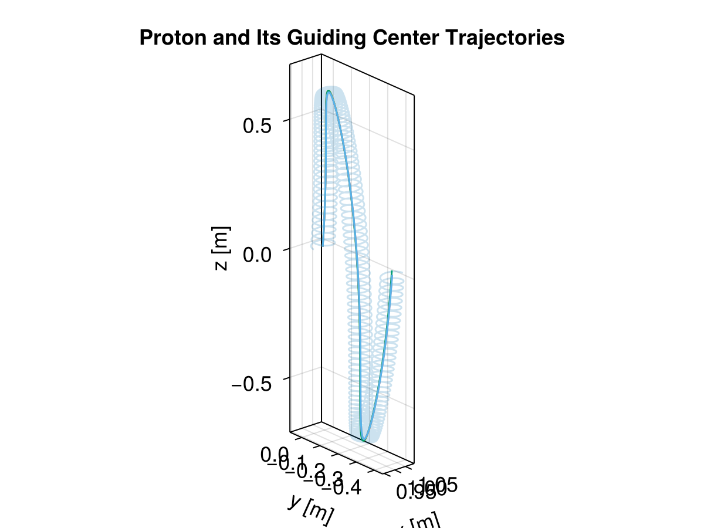
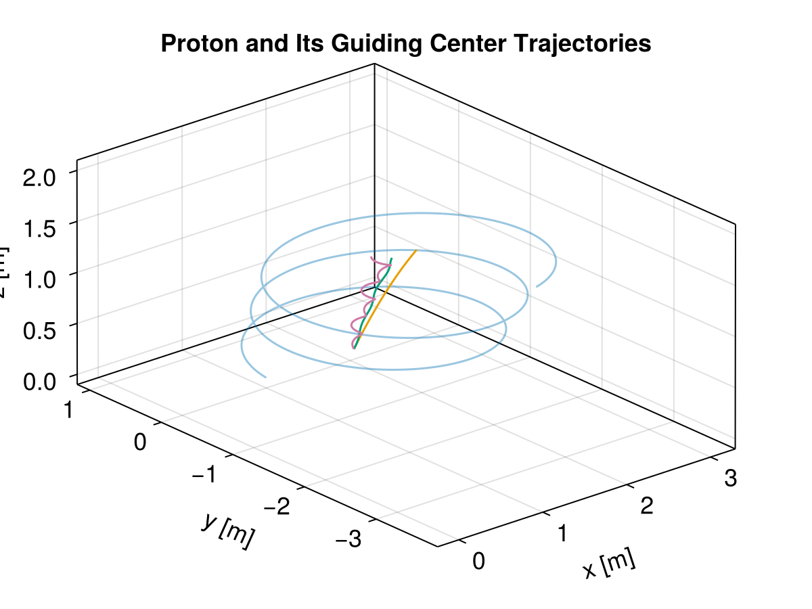
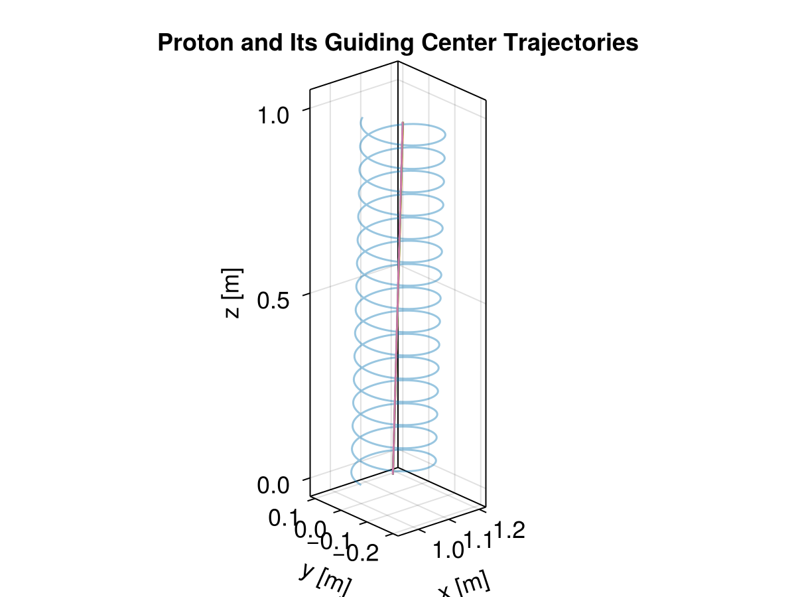

Guiding Center Approximation


This example demonstrates how to solve the guiding center (GC) equations directly using TestParticle.jl. More theoretical details can be found in Guiding Center.
using TestParticle, OrdinaryDiffEqVerner, StaticArrays
import TestParticle as TP
using CairoMakie
function curved_B(x)
# satisify ∇ ⋅ B = 0
# B_θ = 1/r => ∂B_θ/∂θ = 0
θ = atan(x[3] / (x[1] + 3))
r = sqrt((x[1] + 3)^2 + x[3]^2)
return SA[-1e-6 * sin(θ) / r, 0, 1e-6 * cos(θ) / r]
end
uniform_B(x) = SA[0.0, 0.0, 1e-8]
uniform_E(x) = SA[1e-9, 0.0, 0.0]
# Initial condition
stateinit = let x0 = [1.0, 0, 0], v0 = [0.0, 1.0, 0.1]
[x0..., v0...]
end
# Time span
tspan = (0, 41)
param = prepare(uniform_E, curved_B, species = Proton)
prob = ODEProblem(trace!, stateinit, tspan, param)
sol = solve(prob, Vern9())
stateinit_gc,
param_gc = TP.prepare_gc(stateinit, uniform_E, curved_B,
species = Proton, removeExB = false)
prob_gc = ODEProblem(trace_gc!, stateinit_gc, tspan, param_gc)
sol_gc = solve(prob_gc, Vern9())
# Test for numerical fields
xrange = range(0.9, 1.1, length = 20)
yrange = range(-0.45, 0.042, length = 60)
zrange = range(-0.65, 0.65, length = 40)
B_numerical = Array{Float64, 4}(undef, 3, length(xrange), length(yrange), length(zrange))
for k in eachindex(zrange), j in eachindex(yrange), i in eachindex(xrange)
x = SA[xrange[i], yrange[j], zrange[k]]
B_numerical[:, i, j, k] = curved_B(x)
end
##TODO Higher order interpolation leads to worse results --- needs investigations!
stateinit_gc,
param_gc = TP.prepare_gc(stateinit, xrange, yrange, zrange,
uniform_E, B_numerical, species = Proton, removeExB = false, order = 1)
prob_gc = ODEProblem(trace_gc_1st!, stateinit_gc, tspan, param_gc)
sol_gc_numericBfield = solve(prob_gc, Vern9())
# analytical drifts
gc = param |> get_gc_func
gc_x0 = gc(stateinit) |> Vector
prob_gc_analytic = ODEProblem(trace_gc_drifts!, gc_x0, tspan, (param..., sol))
sol_gc_analytic = solve(prob_gc_analytic, Vern9(); save_idxs = [1, 2, 3])
# Functions for obtaining the guiding center from actual trajectory
gc_plot(x, y, z, vx, vy, vz) = (gc([x, y, z, vx, vy, vz])...,)
# Visualization
f = Figure(fontsize = 18)
ax = Axis3(f[1, 1],
title = "Proton and Its Guiding Center Trajectories",
xlabel = "x [m]",
ylabel = "y [m]",
zlabel = "z [m]",
aspect = :data
)
plot!(ax, sol, idxs = (1, 2, 3), color = (Makie.wong_colors()[1], 0.2))
plot!(ax, sol_gc, idxs = (1, 2, 3), color = Makie.wong_colors()[2])
plot!(ax, sol_gc_numericBfield, idxs = (1, 2, 3), color = Makie.wong_colors()[3])
lines!(ax, sol_gc_analytic, idxs = (1, 2, 3), color = Makie.wong_colors()[4])
lines!(ax, sol, idxs = (gc_plot, 1, 2, 3, 4, 5, 6), color = Makie.wong_colors()[5])

It is important to satisfy the strict scale requirements for the GC approximation, i.e. the gyro-radius must be much smaller than the characteristic spatial scales of the EM fields (on the order of 0.01) for the finite-Larmor-radius (FLR) 1st order approximation to be valid. Consider the following example of grad-B drift:
uniform_E(x) = SA[1e-9, 0.0, 0.0]
grad_B(x) = SA[0, 0, 1e-8 + 1e-9 * x[2]]
tspan = (0, 20)
stateinit = let x0 = [1.0, 0, 0], v0 = [0.0, 1.0, 0.1]
[x0..., v0...]
end
stateinit_gc,
param_gc = TP.prepare_gc(stateinit, uniform_E, grad_B,
species = Proton, removeExB = false)
prob_gc = ODEProblem(trace_gc_1st!, stateinit_gc, tspan, param_gc)
sol_gc = solve(prob_gc, Vern9())
# analytical drifts
param = prepare(uniform_E, grad_B, species = Proton)
prob = ODEProblem(trace!, stateinit, tspan, param)
sol = solve(prob, Vern9())
gc = param |> get_gc_func
gc_x0 = gc(stateinit) |> Vector
prob_gc_analytic = ODEProblem(trace_gc_drifts!, gc_x0, tspan, (param..., sol))
sol_gc_analytic = solve(prob_gc_analytic, Vern9(); save_idxs = [1, 2, 3])
# Visualization
f = Figure(fontsize = 18)
ax = Axis3(f[1, 1],
title = "Proton and Its Guiding Center Trajectories",
xlabel = "x [m]",
ylabel = "y [m]",
zlabel = "z [m]",
aspect = :data
)
plot!(ax, sol, idxs = (1, 2, 3), color = (Makie.wong_colors()[1], 0.4))
plot!(ax, sol_gc, idxs = (1, 2, 3), color = Makie.wong_colors()[2])
lines!(ax, sol_gc_analytic, idxs = (1, 2, 3), color = Makie.wong_colors()[3])
lines!(ax, sol, idxs = (gc_plot, 1, 2, 3, 4, 5, 6), color = Makie.wong_colors()[4])

We can clearly see the deviations caused by the FLR effect. If we use a smaller gyro-radius by increasing the magnetic field, this accuracy will be much higher:
grad_B(x) = SA[0, 0, 1e-7 + 1e-8 * x[2]]
tspan = (0, 10)
stateinit_gc,
param_gc = TP.prepare_gc(stateinit, uniform_E, grad_B,
species = Proton, removeExB = false)
prob_gc = ODEProblem(trace_gc_1st!, stateinit_gc, tspan, param_gc)
sol_gc = solve(prob_gc, Vern9())
# analytical drifts
param = prepare(uniform_E, grad_B, species = Proton)
prob = ODEProblem(trace!, stateinit, tspan, param)
sol = solve(prob, Vern9())
gc = param |> get_gc_func
gc_x0 = gc(stateinit) |> Vector
prob_gc_analytic = ODEProblem(trace_gc_drifts!, gc_x0, tspan, (param..., sol))
sol_gc_analytic = solve(prob_gc_analytic, Vern9(); save_idxs = [1, 2, 3])
# Visualization
f = Figure(fontsize = 18)
ax = Axis3(f[1, 1],
title = "Proton and Its Guiding Center Trajectories",
xlabel = "x [m]",
ylabel = "y [m]",
zlabel = "z [m]",
aspect = :data
)
plot!(ax, sol, idxs = (1, 2, 3), color = (Makie.wong_colors()[1], 0.4))
plot!(ax, sol_gc, idxs = (1, 2, 3), color = Makie.wong_colors()[2])
lines!(ax, sol_gc_analytic, idxs = (1, 2, 3), color = Makie.wong_colors()[3])
lines!(ax, sol, idxs = (gc_plot, 1, 2, 3, 4, 5, 6), color = Makie.wong_colors()[4])

Therefore, it is crucial to check the scale before performing any GC tracing!
This page was generated using DemoCards.jl and Literate.jl.